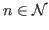

Dans toute la suite de cette section, le caractère courrant désignera celui sur lequel est positionné le curseur. De même, la ligne courrant sera celle ou se trouve le curseur.
Pour "vi", un mot est une séquence de caractères alphanumériques séparés par un ou plusieurs espaces ou tabulation ou bien encore un caractère de ponctuation. Le mot courrant désigne la chaine de caractère commençant à la position du curseur jusqu'à un caractère valide de délimitatio pour un mot.
|
|
En mode insertion, efface le caractère précédent. | |
|
|
En mode insertion, efface le mot précédent. | |
|
|
En mode insertion, efface tout le texte inséré depuis le début du mode "insertion". | |
| nx | Efface les "n" caractères suivants y compris le caractère courrant. Si "n" n'est pas spécifié, "vi" n'efface que le caractère courrant. | |
| nX | Efface les "n" caractères précédents y compris le caractère courrant. Si "n" n'est pas spécifié, "vi" n'efface que le caractère précédent. | |
| xp | Intervertit le caractère courrant avec le caractère suivant. | |
| ndw | Efface les "n" mots suivants. Si "n" n'est pas spécifié, "vi ï¿12> détruit le mot courrant. Pour rappel, un mot est une suite de caractères séparés par un ou plusieurs espaces ou tabulation ou bien par un caractère de ponctuation. | |
| ndb | Efface les "n" mots précédents. Si "n" n'est pas spécifié, "vi ï¿12> détruit le mot courrant. | |
| ndd | Efface les "n" lignes suivantes en commençant par la ligne courrante. Si «n n" n'est pas spécifié, "vi" ne détruit que la ligne courrante. | |
| :n,md | Détruit les lignes de "n" à "m". Si
"
" ou "
![[*]](crossref.png) ). Si "n" ou "m" est une
expression régulière délimitée par le caractère "/",
l'opération commence à la première ligne trouvée à partir
de la position courrant satisfaisant
l'expression régulière ou bien se termine à la première
ligne satisfaisant l'expression régulière se trouvant
à la suite de la première ligne à effacer. ). Si "n" ou "m" est une
expression régulière délimitée par le caractère "/",
l'opération commence à la première ligne trouvée à partir
de la position courrant satisfaisant
l'expression régulière ou bien se termine à la première
ligne satisfaisant l'expression régulière se trouvant
à la suite de la première ligne à effacer. |
|
D ou d$ |
Détruit tout ce qui suit à partir de la position courrante du curseur jusqu'à la fin de la ligne. | |
| dcmd | Détruit le texte à partir de la position courrante du curseur
jusqu'au point indiqué par la commande de déplacement du
cuseur "cmd". Par exemple, "dG"
efface toutes les lignes à partir de la position courrante jusqu'à
la fin de fichier. Cet exemple est équivalent à ":.,$d".
Reportez-vous à la section pour les
commandes de déplacement du curseur. |
|
La figure décrit les différentes actions de ces commandes
en fonction de la position du curseur dans le fichier.